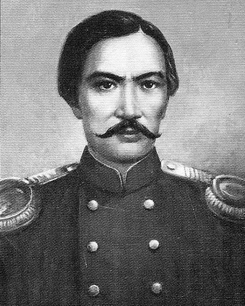

Абылай ханның ұрпағы, әкесі Шыңғыс аға сұлтан болған. Балалығы Құсмұрын мен Сырымбетте, әжесі Айғанымның қолында өткен. 12 жасында Омбы кадет корпусына берілген.

Шын аты Мұхаммед-Қанафия, Шоқан бала кездегі есімі. Достоевскиймен дос болған, жазушы оны «бауырым» деп атаған.
«Аққан жұлдызымыз» 1865 жылы, 30 жасқа толмай қайтыс болған.
2026 жылы оның портфолиосы қандай болар еді